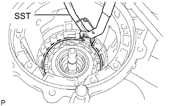
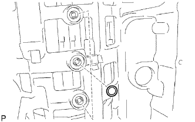
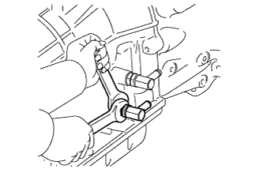
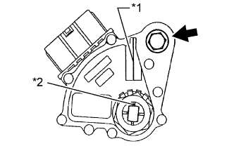

AUTOMATIC TRANSMISSION UNIT > REASSEMBLY |
| 1. BEARING POSITION |
Check the bearing positions.
| Mark | Front Race Diameter Inside/Outside | Thrust Bearing Diameter Inside/Outside | Rear Race Diameter Inside/Outside |
| A | 74.26 to 74.56 mm (2.92 to 2.94 in.)/87.39 to 87.74 mm (3.44 to 3.45 in.) | 71.96 to 72.26 mm (2.83 to 2.84 in.)/85.25 to 85.60 mm (3.36 to 3.37 in.) | - |
| B | 37.0 to 37.3 mm (1.46 to 1.47 in.)/52.1 to 52.3 mm (2.05 to 2.06 in.) | 34.65 to 34.85 mm (81.36 to 1.37 in.)/51.56 to 51.86 mm (2.03 to 2.04 in.) | - |
| C | - | 21.35 to 21.60 mm (0.841 to 0.850 in.)/40.72 to 40.92 mm (1.60 to 1.61 in.) | 22.65 to 22.90 mm (0.892 to 0.902 in.)/44.50 to 44.75 mm (1.75 to 1.76 in.) |
| D | - | 35.65 to 35.9 mm (1.40 to 1.41 in.)/56.3 to 56.55 mm (2.22 to 2.23 in.) | - |
| E | - | 42.55 to 42.80 mm (1.68 to 1.69 in.)/60.84 to 61.14 mm (2.40 to 2.41 in.) | - |
| F | 38.0 to 38.2 mm (1.49 to 1.50 in.)/56.50 to 57.0 mm (2.22 to 2.24 in.) | 43.4 to 43.6 mm (1.71 to 1.72 in.)/58.0 to 58.25 mm (2.28 to 2.29 in.) | - |
| G | - | 55.76 to 55.95 mm (2.19 to 2.20 in.)/76.1 to 76.35 mm (3.00 to 3.01 in.) | 53.75 to 54.0 mm (2.12 to 2.13 in.)/73.7 to 74.0 mm (2.90 to 2.91 in.) |
| H | 33.18 to 33.53 mm (1.31 to 1.32 in.)/48.8 to 49.0 mm (1.89 to 1.93 in.) | 32.15 to 32.31 mm (1.26 to 1.27 in.)/48.97 to 49.22 mm (1.93 to 1.94 in.) | 32.15 to 32.4 mm (1.27 to 1.28 in.)/48.7 to 49.0 mm (1.92 to 1.93 in.) |
| I | - | 43.60 to 43.85 mm (1.72 to 1.73 in.)/60.56 to 60.86 mm (2.38 to 2.40 in.) | 47.15 to 47.40 mm (81.86 to 1.87 in.)/67.07 to 67.40 mm (2.64 to 2.65 in.) |
| 2. ASSEMBLE NO. 4 BRAKE PISTON AND BRAKE REACTION SLEEVE |
 |
Coat 2 new O-rings with ATF and install them to the brake reaction sleeve.
Coat 2 new O-rings with ATF and install them to the No. 4 brake piston.
| *1 | New O-Ring |
Install the No. 4 brake piston to the reaction sleeve.
| 3. INSTALL NO. 4 BRAKE PISTON WITH BRAKE REACTION SLEEVE |
 |
Install the No. 4 brake piston with brake reaction sleeve to the transmission case
| 4. INSTALL 1ST AND REVERSE BRAKE PISTON |
Coat a new O-ring with ATF.
Install the O-ring to the 1st and reverse brake piston.
With the spring seat of the piston facing upwards (the front side), install the piston to the transmission case.
| 5. INSTALL 1ST AND REVERSE BRAKE RETURN SPRING SUB-ASSEMBLY |
Place the brake return spring onto the 1st and reverse brake piston.
Place SST on the spring retainer and compress the return spring.
Using SST, install the snap ring.
| *1 | Snap Ring |
 |
Make sure the No. 4 brake piston moves smoothly when applying and releasing compressed air into and from the transmission case.
| 6. INSTALL REAR PLANETARY GEAR ASSEMBLY |
 |
Install the thrust bearing race.
| Item | Inside | Outside |
| Race I | 47.15 to 47.40 mm (81.86 to 1.87 in.) | 67.07 to 67.40 mm (2.64 to 2.65 in.) |
Install the thrust needle roller bearing to the rear planetary gear.
| Item | Inside | Outside |
| Bearing I | 43.60 to 43.85 mm (1.72 to 1.73 in.) | 60.56 to 60.86 mm (2.38 to 2.40 in.) |
 |
Install the rear planetary gear assembly.
| 7. SELECT NO. 4 BRAKE FLANGE |
 |
Using a vernier caliper, measure distance A (from the top surface of the 1st and reverse brake piston to the step in the transmission case) in the illustration.
Assemble the flange, 8 discs and 7 plates, and then, using a vernier caliper, measure distance B in the illustration at both ends across the diameter and calculate the average.
| *1 | Flange |
| *2 | Plate |
| *3 | Disc |
| *4 | Selected Flange |
Select a No. 4 brake flange so that the value of measured distance A minus distance B minus thickness H is 1.35 to 1.65 mm (0.0531 to 0.0650 in.).
| No. | Thickness |
| 0 | 0 mm (0 in.) |
| 2 | 0.15 to 0.25 mm (0.00590 to 0.00984 in.) |
| 4 | 0.35 to 0.45 mm (0.0138 to 0.0177 in.) |
| 6 | 0.55 to 0.65 mm (0.0217 to 0.0256 in.) |
| 8 | 0.75 to 0.85 mm (0.0295 to 0.0335 in.) |
| 10 | 0.95 to 1.05 mm (0.0374 to 0.0413 in.) |
| 12 | 1.15 to 1.25 mm (0.0453 to 0.0492 in.) |
| 14 | 1.35 to 1.45 mm (0.0531 to 0.0571 in.) |
| 8. INSTALL NO. 4 BRAKE DISC |
 |
Install the flange, 8 discs, 7 plates and selected flange.
| *1 | Flange |
| *2 | Disc |
| *3 | Plate |
| 9. INSTALL BRAKE PLATE STOPPER SPRING |
 |
| 10. INSTALL REAR PLANETARY RING GEAR FLANGE SUB-ASSEMBLY |
Install the rear planetary ring gear flange to the rear planetary ring gear.
Using a screwdriver, install the snap ring.
 |
Install the thrust bearing race, thrust needle roller bearing, thrust bearing race and planetary ring gear flange together with the rear planetary ring gear to the intermediate shaft.
| Item | Inside | Outside |
| Race H (Fr) | 33.18 to 33.53 mm (1.31 to 1.32 in.) | 48.8 to 49.0 mm (1.89 to 1.93 in.) |
| Bearing H | 32.15 to 32.31 mm (1.26 to 1.27 in.) | 48.97 to 49.22 mm (1.93 to 1.94 in.) |
| Race H (Rr) | 32.15 to 32.4 mm (1.27 to 1.28 in.) | 48.7 to 49.0 mm (1.92 to 1.93 in.) |
| 11. INSTALL NO. 3 1-WAY CLUTCH ASSEMBLY |
 |
Install the 1-way clutch and 1-way clutch inner race to the intermediate shaft.
| 12. INSTALL INTERMEDIATE SHAFT |
Install the intermediate shaft with No. 3 1-way clutch assembly to the case.
|  |
Using SST, install the snap ring.
| 13. INSTALL CENTER PLANETARY GEAR ASSEMBLY |
Install the planetary sun gear and center planetary gear to the case.
Coat the thrust bearing race with petroleum jelly and install it to the center planetary gear.
| Item | Inside | Outside |
| Race G | 53.75 to 55.95 mm (2.12 to 2.20 in.) | 73.7 to 74.0 mm (2.90 to 2.91 in.) |
| 14. INSTALL NO. 2 BRAKE PISTON |
Coat 2 new O-rings with ATF and install them to the brake piston.
| *1 | New O-Ring |
Press the brake piston into the brake cylinder with both hands.
Install the No. 2 brake cylinder with No. 2 brake piston to the case.
Check that the oil pressure apply hole of the No. 2 brake cylinder aligns with the oil pressure apply hole of the transmission case.
| 15. SELECT NO. 2 BRAKE FLANGE |
Install the No. 2 brake piston return spring and flange to the No. 2 brake piston.
Place SST on the brake flange and compress the brake return spring.
Using a screwdriver, install the snap ring to the transmission case.
Measure distance A (from the top surface of the snap ring to the surface of the brake piston return spring retainer) in the illustration.
| *1 | Return Spring Retainer |
Remove the snap ring, flange and No. 2 brake piston return spring.
Assemble the flange, 4 discs, 3 plates and flange (thickness: 1.95 to 2.05 mm (0.0768 to 0.0807 in.)) as shown in the illustration, and then, using a vernier caliper, measure distance B in the illustration at both ends across the diameter and calculate the average.
| *1 | Flange |
| *2 | Plate |
| *3 | Disc |
| *4 | Flange (Thickness: 1.95 to 2.05 mm (0.0768 to 0.0807 in.)) |
Select a No. 2 brake flange so that the value of measured distance A minus distance B is 0.6 to 0.9 mm (0.0236 to 0.0354 in.).
| No. | Thickness |
| 0 | 1.95 to 2.05 mm (0.0768 to 0.0807 in.) |
| 1 | 2.05 to 2.15 mm (0.0807 to 0.0846 in.) |
| 2 | 2.15 to 2.25 mm (0.0846 to 0.0886 in.) |
| 3 | 2.25 to 2.35 mm (0.0886 to 0.0925 in.) |
| 4 | 2.35 to 2.45 mm (0.0925 to 0.0965 in.) |
| 5 | 2.45 to 2.55 mm (0.0965 to 0.100 in.) |
| 6 | 2.55 to 2.65 mm (0.100 to 0.104 in.) |
| 7 | 2.65 to 2.75 mm (0.104 to 0.108 in.) |
| 16. INSTALL NO. 2 BRAKE DISC SET |
Install the brake piston return spring.
Install the 2 flanges, 4 discs and 3 plates.
| *1 | Flange |
| *2 | Disc |
| *3 | Plate |
Using SST and a press, compress the return spring and install the snap ring.
| 17. INSTALL NO. 1 BRAKE PISTON |
Coat 2 new O-rings with ATF and install them to the brake piston.
| *1 | New O-Ring |
Press the brake piston into the brake cylinder with both hands to install it.
| 18. INSTALL NO. 1 BRAKE PISTON RETURN SPRING SUB-ASSEMBLY |
 |
Install the No. 1 brake cylinder with No. 1 brake piston and the brake piston return spring to the transmission case.
Check that the oil pressure apply hole of the No. 1 brake cylinder aligns with the oil pressure apply hole of the transmission case.
| 19. INSTALL NO. 1 BRAKE PISTON RETURN SPRING SNAP RING |
Using SST, compress the return spring and install the No. 1 brake piston return spring snap ring.
| 20. SELECT NO. 1 BRAKE FLANGE |
Using a vernier caliper, measure distance A (from the step in the transmission case to the top surface of the No. 1 brake piston) in the illustration.
Assemble the 4 plates, 4 discs and flange (thickness: 2.15 to 2.25 mm (0.0846 to 0.0886 in.)) as shown in the illustration, and then, using a vernier caliper, measure distance B in the illustration at both ends across the diameter and calculate the average.
| *1 | Plate |
| *2 | Disc |
| *3 | Flange |
Select a No. 1 brake flange so that the value of measured distance A minus distance B is 0.56 to 0.86 mm (0.0220 to 0.0339 in.).
| No. | Thickness |
| 0 | 1.95 to 2.05 mm (0.0768 to 0.0807 in.) |
| 1 | 2.15 to 2.25 mm (0.0846 to 0.0886 in.) |
| 2 | 2.35 to 2.45 mm (0.0925 to 0.0965 in.) |
| 3 | 2.55 to 2.65 mm (0.100 to 0.104 in.) |
| 21. INSTALL NO. 1 BRAKE DISC |
Install the 4 plates, 4 discs and flange.
| *1 | Plate |
| *2 | Disc |
| *3 | Flange |
| 22. INSTALL CENTER PLANETARY RING GEAR |
Install the center planetary ring gear and front planetary ring gear flange to the front planetary ring gear.
 |
Using a screwdriver, install the snap ring.
| 23. INSTALL FRONT PLANETARY RING GEAR |
 |
Install the thrust needle roller bearing and front planetary ring gear to the case.
| Item | Inside | Outside |
| Bearing G | 55.76 to 55.79 mm (2.19 to 2.20 in.) | 76.1 to 76.35 mm (3.00 to 3.01 in.) |
| 24. INSTALL FRONT PLANETARY GEAR ASSEMBLY |
 |
Install the thrust washer and thrust needle roller bearing.
Coat the thrust bearing race with petroleum jelly and install it to the front planetary ring gear.
| Item | Inside | Outside |
| Bearing F | 43.4 to 43.6 mm (1.71 to 1.72 in.) | 58.0 to 58.25 mm (2.28 to 2.29 in.) |
| Race F | 38.0 to 38.2 mm (1.49 to 1.50 in.) | 56.50 to 57.0 mm (2.22 to 2.24 in.) |
| *1 | Bearing |
| *1 | Race |
 |
Install the front planetary gear assembly and 1-way clutch inner race to the case.
| 25. INSTALL NO. 3 BRAKE PISTON |
Coat 2 new O-rings with ATF and install them to the No. 3 brake piston.
| *1 | New O-Ring |
Press the No. 3 brake cylinder into the No. 3 brake piston with both hands to install it.
 |
Using SST and a press, compress the return spring and install the snap ring.
| 26. INSTALL NO. 3 BRAKE CYLINDER |
 |
Install the No. 3 brake cylinder to the case.
| 27. INSTALL 1-WAY CLUTCH ASSEMBLY |
 |
Install the thrust washer and 1-way clutch to the case.
| 28. INSTALL NO. 3 BRAKE PISTON HOLE SNAP RING |
Using SST, install the snap ring.
| 29. INSTALL NO. 3 BRAKE DISC |
Install the cushion plate, 4 plates, 4 discs and flange to the case.
| *1 | Cushion Plate |
| *2 | Plate |
| *3 | Disc |
| *4 | Flange |
| 30. INSTALL NO. 3 BRAKE SNAP RING |
 |
Using a screwdriver, install the snap ring.
| 31. INSTALL DIRECT CLUTCH PISTON SUB-ASSEMBLY |
Coat 2 new O-rings with ATF and install them to the direct clutch piston.
| *1 | New O-Ring |
Install the direct clutch return spring and No. 2 clutch balancer to the direct clutch piston sub-assembly.
Press the direct clutch piston with clutch return spring and the clutch balancer into the reverse clutch piston with both hands to install them.
Place SST on the direct clutch balancer and compress the return spring with a press.
Using SST, install the snap ring.
Position the end gap of the snap ring in the balancer as shown in the illustration.
| *1 | Stopper |
| 32. INSTALL REVERSE CLUTCH PISTON SUB-ASSEMBLY |
Coat a new O-ring with ATF and install it to the clutch drum.
| *1 | New O-Ring |
 |
Coat a new O-ring with ATF and install it to the reverse clutch piston.
| *1 | New O-Ring |
Press the clutch drum into the reverse clutch piston with both hands.
| 33. INSTALL NO. 3 CLUTCH BALANCER |
Coat a new O-ring with ATF and install it to the reverse clutch piston.
| *1 | New O-Ring |
Install the reverse clutch return spring and balancer to the reverse clutch piston.
 |
Place SST on the clutch balancer and compress the return spring with a press.
Using SST, install the snap ring.
Position the end gap of the snap ring in the piston as shown in the illustration.
| *1 | Gap |
| 34. INSTALL DIRECT CLUTCH DISC |
Install the 6 plates, 6 discs and direct clutch flange to the clutch drum.
| *1 | Plate |
| *2 | Disc |
| *3 | Flange |
 |
Using a screwdriver, install the snap ring to the clutch drum.
Using a dial indicator, measure the moving distance (A) of the clutch flange at both ends across the diameter while applying compressed air (392 kPa, 4.0 kgf/cm2, 57 psi) into the oil hole as shown in the illustration.
| *1 | Oil Hole | *2 | - |
| Mark | Thickness |
| 2 | 2.95 to 3.05 mm (0.116 to 0.120 in.) |
| 3 | 3.05 to 3.15 mm (0.120 to 0.124 in.) |
| 4 | 3.15 to 3.25 mm (0.124 to 0.128 in.) |
| 5 | 3.25 to 3.35 mm (0.128 to 0.132 in.) |
| 6 | 3.35 to 3.45 mm (0.132 to 0.136 in.) |
| 7 | 3.45 to 3.55 mm (0.136 to 0.140 in.) |
| 8 | 3.55 to 3.65 mm (0.140 to 0.144 in.) |
| 9 | 3.65 to 3.75 mm (0.144 to 0.148 in.) |
| A | 3.75 to 3.85 mm (0.148 to 0.152 in.) |
Temporarily remove the snap ring, replace the flange with the selected flange and reinstall the snap ring.
| 35. SELECT REVERSE CLUTCH FLANGE |
Using a screwdriver, install the snap ring to the clutch drum.
Install the 2 flanges, 5 discs, 4 plates, cushion plate and reverse clutch reaction sleeve to the clutch drum.
| *1 | Flange |
| *1 | Disc |
| *1 | Plate |
| *1 | Cushion Plate |
Using a screwdriver, install the hole snap ring.
Using a dial indicator, measure the moving distance (A minus B) of the top surface of the reverse clutch piston (A) and cushion plate (B) at both ends across the diameter while applying compressed air (392 kPa, 4.0 kgf/ cm2, 57 psi) into the oil hole as shown in the illustration. Then choose a flange of an appropriate thickness from the table so that the measured value is within the standard range.
| *1 | Oil Hole | *2 | - |
| Mark | Thickness |
| 0 | 2.75 to 2.85 mm (0.108 to 0.112 in.) |
| 1 | 2.85 to 2.95 mm (0.112 to 0.116 in.) |
| 2 | 2.95 to 3.05 mm (0.116 to 0.120 in.) |
| 3 | 3.05 to 3.15 mm (0.120 to 0.124 in.) |
| 4 | 3.15 to 3.25 mm (0.124 to 0.128 in.) |
| 5 | 3.25 to 3.35 mm (0.128 to 0.132 in.) |
| 6 | 3.35 to 3.45 mm (0.132 to 0.136 in.) |
| 7 | 3.45 to 3.55 mm (0.136 to 0.140 in.) |
| 8 | 3.55 to 3.65 mm (0.140 to 0.144 in.) |
| 9 | 3.65 to 3.75 mm (0.144 to 0.148 in.) |
| A | 3.75 to 3.85 mm (0.148 to 0.152 in.) |
Remove the snap ring, reverse clutch reaction sleeve and rear clutch disc set from the clutch drum.
| 36. INSTALL FORWARD CLUTCH PISTON SUB-ASSEMBLY AND COAST CLUTCH PISTON |
Coat a new O-ring with ATF and install it to the input shaft.
| *1 | New O-Ring |
 |
Install the forward clutch piston and coast clutch piston to the input shaft.
Coat a new O-ring with ATF and install it to the No. 1 clutch balancer.
| *1 | New O-Ring |
Install the forward clutch return spring and No. 1 clutch balancer to the input shaft.
Place SST on the No. 1 clutch balancer and compress the return spring with a press.
Using SST, install the snap ring.
Position the end gap of the snap ring in the balancer as shown in the illustration.
| *a | CORRECT |
| *b | INCORRECT |
| 37. INSTALL COAST CLUTCH DISC SET |
Install the 3 plates, 3 discs and flange.
| *1 | Plate |
| *2 | Disc |
| *3 | Flange |
Temporarily install the snap ring.
Using a dial indicator, measure the moving distance (A) of the clutch flange at both ends across the diameter while applying compressed air (196 kPa, 2.0 kgf/cm2, 28 psi) into the oil hole as shown in the illustration.
| *1 | Oil Hole |
| Mark | Thickness |
| 0 | 2.95 to 3.05 mm (0.116 to 0.120 in.) |
| 1 | 3.05 to 3.15 mm (0.120 to 0.124 in.) |
| 2 | 3.15 to 3.25 mm (0.124 to 0.128 in.) |
| 3 | 3.25 to 3.35 mm (0.128 to 0.132 in.) |
| 4 | 3.35 to 3.45 mm (0.132 to 0.136 in.) |
| 5 | 3.45 to 3.55 mm (0.136 to 0.140 in.) |
| 6 | 3.55 to 3.65 mm (0.140 to 0.144 in.) |
| 7 | 3.65 to 3.75 mm (0.144 to 0.148 in.) |
| 8 | 3.75 to 3.85 mm (0.148 to 0.152 in.) |
| A | 3.85 to 3.95 mm (0.152 to 0.156 in.) |
Temporarily remove the snap ring, replace the flange with the selected flange and reinstall the snap ring.
| 38. INSTALL UNDERDRIVE 1-WAY CLUTCH ASSEMBLY |
Install the No. 2 clutch hub thrust washer to the coast clutch hub.
Install the 1-way clutch to the coast clutch hub.
| 39. INSPECT UNDERDRIVE 1-WAY CLUTCH ASSEMBLY |
Hold the reverse clutch hub and turn the 1-way clutch assembly.
Check that the 1-way clutch turns freely clockwise and locks when turned counterclockwise.
 | Free |
 | Lock |
| 40. INSTALL COAST CLUTCH HUB SUB-ASSEMBLY WITH UNDERDRIVE 1-WAY CLUTCH ASSEMBLY |
Install the 2 thrust needle roller bearings, thrust bearing race and coast clutch hub together with the underdrive 1-way clutch to the input shaft.
| Item | Inside | Outside |
| Bearing C | 21.35 to 21.60 mm (0.841 to 0.850 in.) | 40.72 to 40.92 mm (1.60 to 1.61 in.) |
| Race C | 22.65 to 22.90 mm (0.892 to 0.902 in.) | 44.50 to 44.75 mm (1.75 to 1.76 in.) |
| Bearing D | 35.65 to 35.9 mm (1.40 to 1.41 in.) | 56.3 to 56.55 mm (2.22 to 2.23 in.) |
| *1 | Bearing C |
| *2 | Race C |
| *3 | Bearing D |
| 41. INSTALL FORWARD MULTIPLE DISC CLUTCH DISC SET |
Install the 5 plates, 5 discs and flange to the input shaft.
| *1 | Plate |
| *2 | Disc |
| *3 | Flange |
 |
Temporarily install the snap ring.
Using a dial indicator, measure the moving distance (A) of the clutch flange at both ends across the diameter while applying compressed air (196 kPa, 2.0 kgf/cm2, 28 psi) into the oil hole as shown in the illustration.
| *1 | Oil Hole |
| Mark | Thickness |
| 0 | 2.95 to 3.05 mm (0.116 to 0.120 in.) |
| 1 | 3.05 to 3.15 mm (0.120 to 0.124 in.) |
| 2 | 3.15 to 3.25 mm (0.124 to 0.128 in.) |
| 3 | 3.25 to 3.35 mm (0.128 to 0.132 in.) |
| 4 | 3.35 to 3.45 mm (0.132 to 0.136 in.) |
| 5 | 3.45 to 3.55 mm (0.136 to 0.140 in.) |
| 6 | 3.55 to 3.65 mm (0.140 to 0.144 in.) |
| 7 | 3.65 to 3.75 mm (0.144 to 0.148 in.) |
| 8 | 3.75 to 3.85 mm (0.148 to 0.152 in.) |
| 9 | 3.85 to 3.95 mm (0.152 to 0.156 in.) |
| A | 3.95 to 4.05 mm (0.156 to 0.159 in.) |
Temporarily remove the snap ring, replace the flange with the selected flange and reinstall the snap ring.
| 42. INSTALL INPUT SHAFT OIL SEAL RING |
Coat 4 new oil seal rings with ATF.
Overlap the seal ring ends in the axial direction.
| *a | CORRECT |
| *b | INCORRECT |
Squeeze the ends of the 4 oil seal rings together, and then install them to the input shaft groove.
| *1 | New Oil Seal Ring |
| 43. INSTALL INPUT SHAFT ASSEMBLY |
 |
Install the input shaft to the clutch drum.
| 44. INSTALL FORWARD CLUTCH HUB SUB-ASSEMBLY |
 |
Install the No. 3 clutch hub thrust washer, forward clutch hub and thrust needle roller bearing to the clutch drum.
| Item | Inside | Outside |
| Bearing E | 42.55 to 42.80 mm (1.68 to 1.69 in.) | 60.84 to 61.14 mm (2.40 to 2.41 in.) |
| 45. INSTALL REVERSE CLUTCH HUB SUB-ASSEMBLY |
Install the reverse clutch hub to the clutch drum.
| 46. INSTALL REAR CLUTCH DISC SET |
Install the flange, 5 discs, 4 plates, selected flange, cushion plate and reverse clutch reaction sleeve to the clutch drum.
| *1 | Flange |
| *1 | Disc |
| *1 | Plate |
| *1 | Selected Flange |
| *1 | Cushion Plate |
Using a screwdriver, install the snap ring to the clutch drum.
| 47. INSTALL NO. 2 1-WAY CLUTCH ASSEMBLY |
Install the clutch drum thrust washer to the clutch drum.
Install the 1-way clutch to the clutch drum.
| 48. INSPECT NO. 2 1-WAY CLUTCH ASSEMBLY |
Hold the reverse clutch hub and turn the 1-way clutch assembly.
Check that the 1-way clutch turns freely clockwise and locks when turned counterclockwise.
| Free |
| Lock |
| 49. INSTALL CLUTCH DRUM AND INPUT SHAFT ASSEMBLY |
Install the 2 thrust needle roller bearings.
| Item | Inside | Outside |
| Bearing A | 71.96 to 72.26 mm (2.83 to 2.84 in.) | 85.25 to 85.6 mm (3.36 to 3.37 in.) |
| Bearing B | 34.65 to 34.85 mm (81.36 to 1.37 in.) | 51.56 to 51.86 mm (2.03 to 2.04 in.) |
| *1 | Bearing A |
| *2 | Bearing B |
Coat the clutch drum thrust washer with petroleum jelly and install it to the clutch drum and input shaft assembly.
Install the clutch drum and input shaft assembly to the transmission case.
| 50. INSTALL OIL PUMP ASSEMBLY |
 |
Coat a new O-ring with ATF and install it to the oil pump.
Install the 2 thrust bearing races to the front oil pump.
| Item | Inside | Outside |
| Race A | 74.26 to 74.56 mm (2.92 to 2.94 in.) | 87.39 to 87.74 mm (3.44 to 3.45 in.) |
| Race B | 37.0 to 37.3 mm (1.46 to 1.47 in.) | 52.1 to 52.3 mm (2.05 to 2.06 in.) |
Pass the input shaft through the center hole of the oil pump and align the bolt holes of the oil pump assembly with the transmission case.
Hold the input shaft and lightly press the oil pump body to slide the oil seal rings into the overdrive direct clutch drum.
Apply seal packing to the flanges of the bolts.
Install the oil pump with the 10 bolts.
| 51. INSPECT INDIVIDUAL PISTON OPERATION |
Check the operating sound while applying compressed air into the oil holes indicated in the illustration.
| 52. INSTALL MANUAL VALVE LEVER SHAFT OIL SEAL |
Using SST, tap in 2 new oil seals.
Coat the lips of the oil seals with MP grease.
| 53. INSTALL MANUAL VALVE LEVER SUB-ASSEMBLY |
 |
Install a new spacer to the manual valve lever.
| *1 | Spacer |
| *2 | Manual Valve Lever |
Push the manual valve lever shaft through the transmission case and install the manual valve lever to the shaft.
 |
Using a hammer, tap in a new spring pin.
Align the manual valve lever indentation with the spacer hole and stake them together with a punch.
Check that the shaft rotates smoothly.
| 54. INSTALL PARKING LOCK PAWL SHAFT |
Install a new E-ring to the shaft.
| *1 | E-Ring |
| *2 | Parking Lock Pawl |
| *3 | Spring |
Install the parking lock pawl, shaft and spring.
| 55. INSTALL PARKING LOCK ROD SUB-ASSEMBLY |
Connect the parking lock rod to the manual valve lever.
| 56. INSTALL PARKING LOCK PAWL BRACKET |
 |
Install the parking lock pawl bracket to the transmission case with the 3 bolts.
Move the manual valve lever to the P position and confirm that the planetary ring gear is correctly locked by the lock pawl.
| *1 | Manual Valve Lever |
| *2 | Planetary Ring Gear |
| *3 | Parking Lock Pawl |
| 57. INSTALL B-1 ACCUMULATOR VALVE |
Install the 2 springs and accumulator valve to the hole.
| Spring | Free Length Outer Diameter | Color |
| B-1 Inner | 44.98 mm (1.77 in.) 11.3 mm (0.445 in.) | Natural |
| B-1 Outer | 46.36 mm (1.83 in.) 17.1 mm (0.673 in.) | Natural |
| 58. INSTALL C-3 ACCUMULATOR PISTON |
Coat 2 new O-rings with ATF and install them to the piston.
| *1 | New O-Ring |
Install the 2 springs and accumulator piston to the hole.
| Spring | Free Length Outer Diameter | Color |
| C-3 Inner | 44.0 mm (1.73 in.) 14.0 mm (0.551 in.) | Yellow |
| C-3 Outer | 73.35 mm (2.89 in.) 19.9 mm (0.783 in.) | Red |
| 59. INSTALL B-3 ACCUMULATOR PISTON |
Coat 2 new O-rings with ATF and install them to the piston.
| *1 | New O-Ring |
Install the spring and accumulator piston to the hole.
| Spring | Free Length Outer Diameter | Color |
| B-3 | 70.5 mm (2.78 in.) 19.7 mm (0.776 in.) | Purple |
| 60. INSTALL C-2 ACCUMULATOR PISTON |
Coat 2 new O-rings with ATF and install them to the piston.
| *1 | New O-Ring |
Install the spring and accumulator piston to the hole.
| Spring | Free Length Outer Diameter | Color |
| C-2 | 62.0 mm (2.44 in.) 15.9 mm (0.626 in.) | White |
| 61. INSTALL CHECK BALL BODY |
Install the spring and check ball body.
| *1 | Spring |
| *2 | Check Ball Body |
| 62. INSTALL BRAKE DRUM GASKET |
 |
Install 3 new brake drum gaskets.
| 63. INSTALL TRANSMISSION CASE GASKET |
|  |
Install 3 new transmission case gaskets.
| 64. INSTALL TRANSMISSION VALVE BODY ASSEMBLY |
 |
Align the hole of the manual valve with the pin of the lever and connect the pin to the manual valve.
| *1 | Pin |
Install the valve body with the 19 bolts.
Install the detent spring and detent spring cover with the bolt.
| 65. INSTALL TRANSMISSION WIRE |
 |
Coat a new O-ring with ATF, and install it to the transmission wire connector.
Install the transmission wire.
Install the bolt.
 |
Connect the 9 solenoid connectors.
Connect the 2 ATF temperature sensors with the 2 clamps and 2 bolts.
| *1 | Orange |
| *2 | Blue |
Attach the wire harness to the 2 clamps.
| 66. INSTALL VALVE BODY OIL STRAINER ASSEMBLY |
 |
Coat a new O-ring with ATF and install it to the oil strainer.
Install the oil strainer with the 4 bolts.
| 67. INSTALL TRANSMISSION OIL CLEANER MAGNET |
Install the 4 magnets.
| 68. INSTALL AUTOMATIC TRANSMISSION OIL PAN SUB-ASSEMBLY |
 |
Install a new gasket to the oil pan.
Install the oil pan with the 20 bolts.
Install a new gasket and the drain plug.
| 69. INSTALL TRANSFER CASE REAR ADAPTER OIL RECEIVER |
 |
Install the transfer case rear adaptor oil receiver to the rear adaptor transfer.
Using snap ring pliers, install the snap ring.
| 70. INSTALL EXTENSION HOUSING REAR OIL SEAL |
Coat the lip of a new oil seal with ATF.
Using SST and a hammer, tap in the oil seal.
| 71. INSTALL REAR TRANSFER ADAPTER |
Install the transfer adapter hole snap ring.
Clean the threads of the bolts and transfer adapter.
Apply seal packing or equivalent to the transfer adapter.
Apply adhesive to the threads of the 8 bolts.
Install the extension housing with the 6 bolts.
| 72. INSTALL AUTOMATIC TRANSMISSION HOUSING |
Clean the threads of the bolts and case with non-residue solvent.
Apply adhesive to the threads of the 4 bolts labeled B and C.
Install the transmission housing with the 10 bolts.
| 73. INSTALL AUTOMATIC TRANSMISSION BREATHER TUBE |
Coat a new O-ring with ATF and install it to the breather tube.
Install the breather tube with the 2 bolts.
| 74. INSTALL SPEED SENSOR |
 |
Coat 2 new O-rings with ATF and install one to each speed sensor.
Install the 2 speed sensors.
Install the 2 bolts.
| 75. INSTALL OIL COOLER TUBE UNION |
|  |
Coat 2 new O-rings with ATF and install them to the 2 oil cooler tube unions.
Install the 2 oil cooler tube unions.
| 76. INSTALL PARK/NEUTRAL POSITION SWITCH ASSEMBLY |
 |
Install the park/neutral position switch to the manual valve lever shaft and temporarily install the adjusting bolt.
Install a new lock washer and the nut.
Turn the control shaft lever counterclockwise until it stops, and then turn it clockwise 2 notches to set it to the N position.
|  |
Align the neutral basic line with the switch groove as shown in the illustration and tighten the adjusting bolt.
| *1 | Neutral Basic Line |
| *2 | Groove |
Using a screwdriver, bend the tabs of the lock washer.
| 77. INSTALL TRANSMISSION CONTROL SHAFT LEVER LH |
Install the control shaft lever LH with the washer and nut.